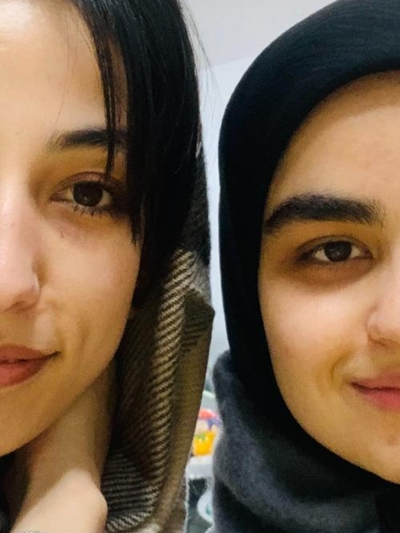
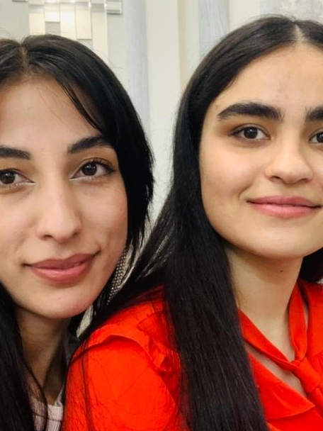
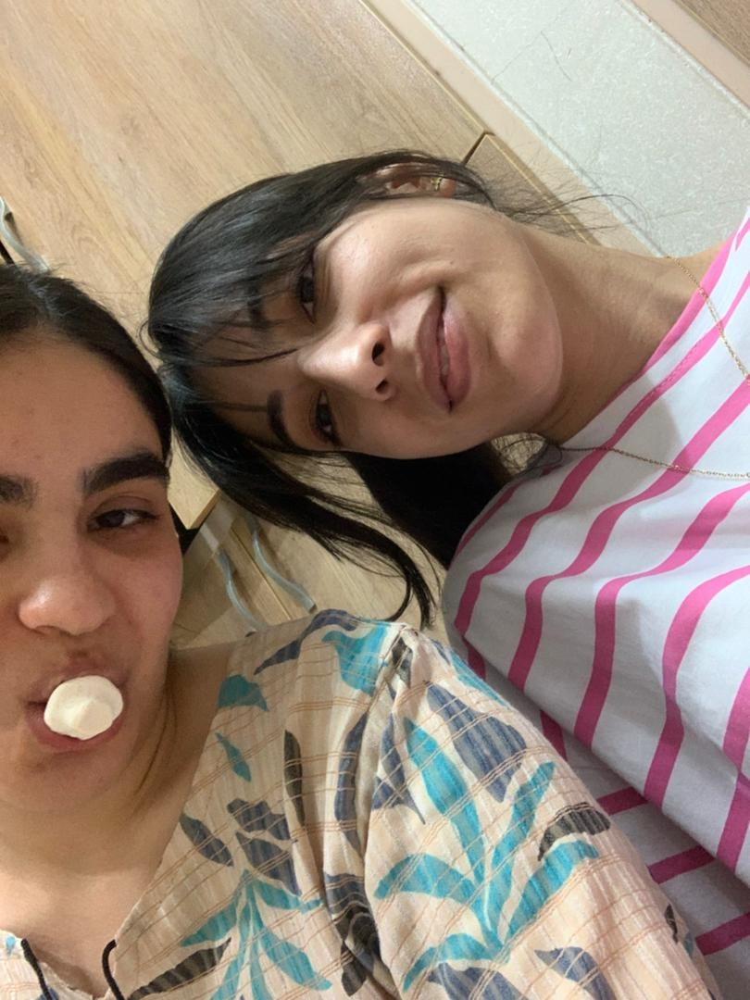
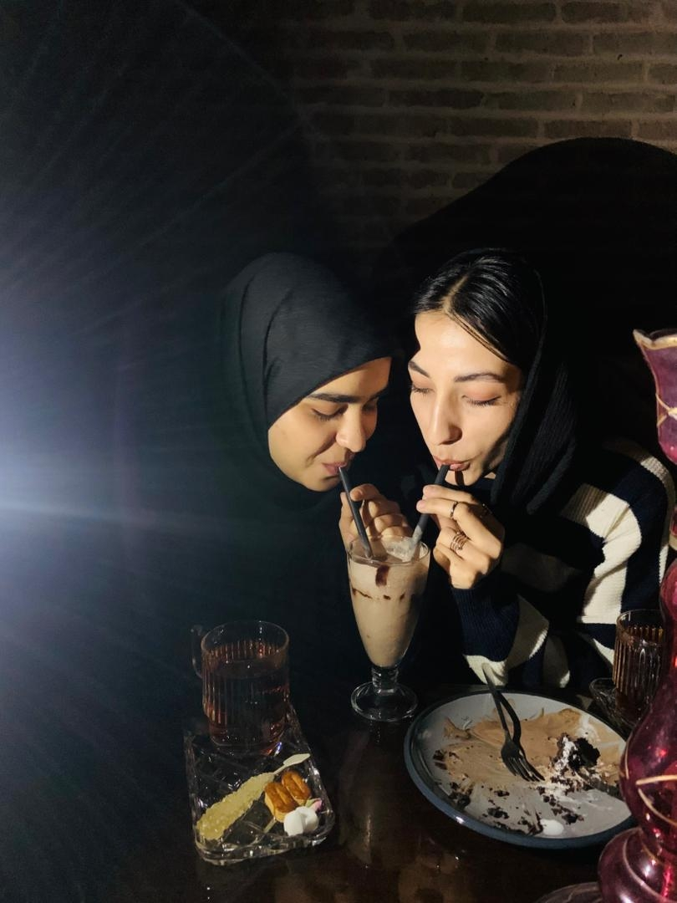
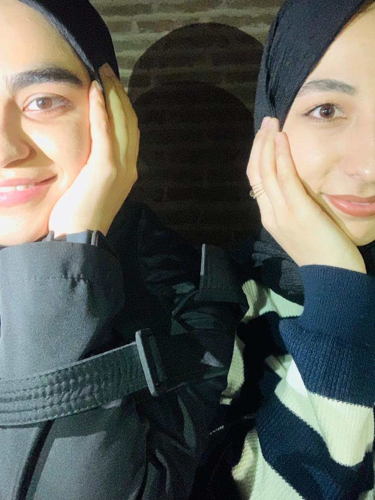
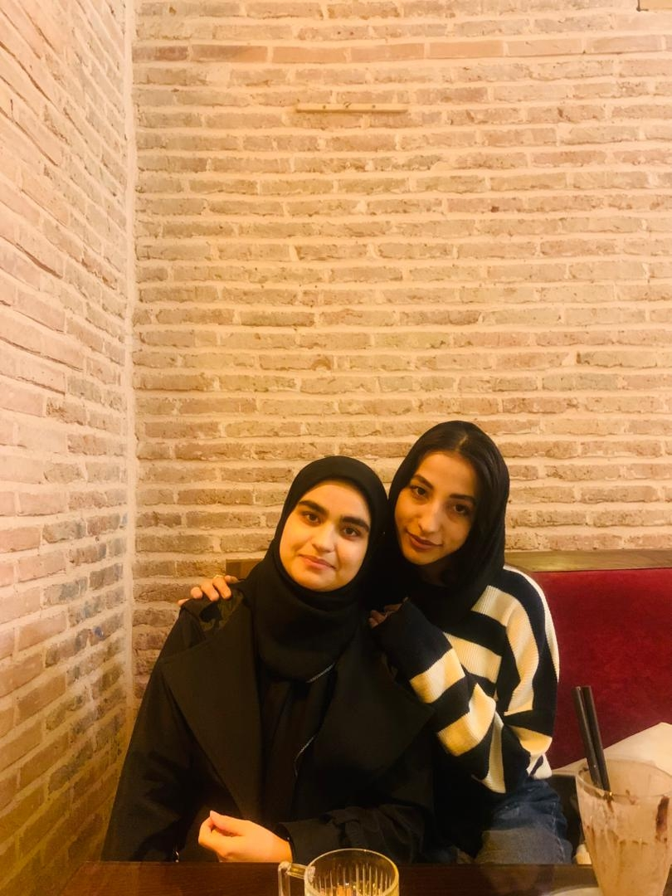
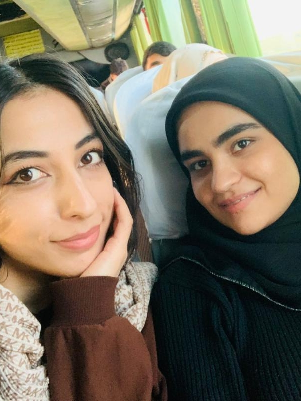

.music-start-box{ text-align: center; margin: 25px 0 15px 0; } #startBtn{ padding: 14px 32px; font-size: 18px; font-weight: bold; color: #fff; border: none; border-radius: 35px; background: linear-gradient(145deg, #7b2cff, #a855f7); box-shadow: 0 6px 0 #5a1fbf, 0 12px 20px rgba(123,44,255,0.6); cursor: pointer; } #startBtn:active{ transform: translateY(6px); box-shadow: 0 2px 0 #5a1fbf, 0 6px 10px rgba(123,44,255,0.4); }
<
دوستیمان پایدار
...
عکسهای یادگاری آرزو و سحر
▶ شروع آهنگ
       <
<
🎵